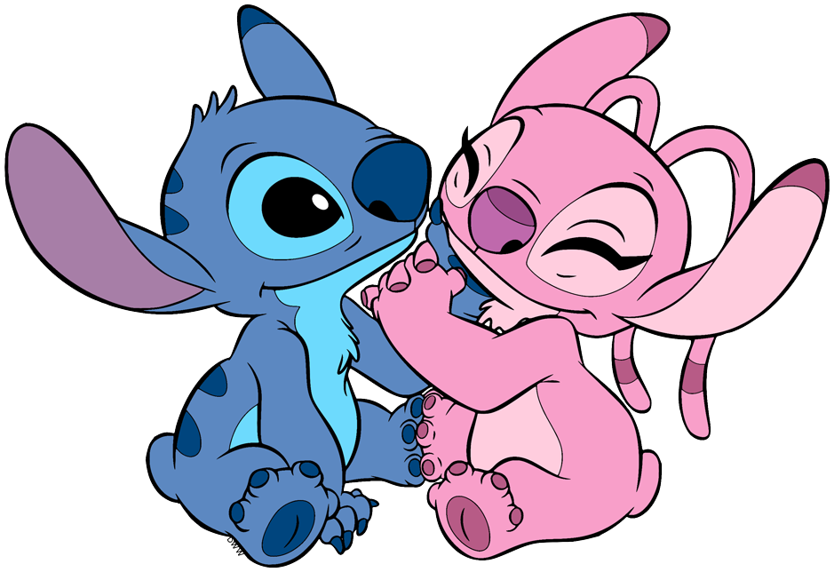

About Stitch
Stitch is a blue dog-like alien. When he's not making a ruckus he is spending time with his family. Ohana Means Family.
Stich and Angel power couple
Stitch's Characteristics
- He's virtually indestructible
- He's super smart
- He's also super michevious
Stiche's "Ohana"
Stich is lucky to have found a family he can call his own. Words cannot describe the true bond they possess